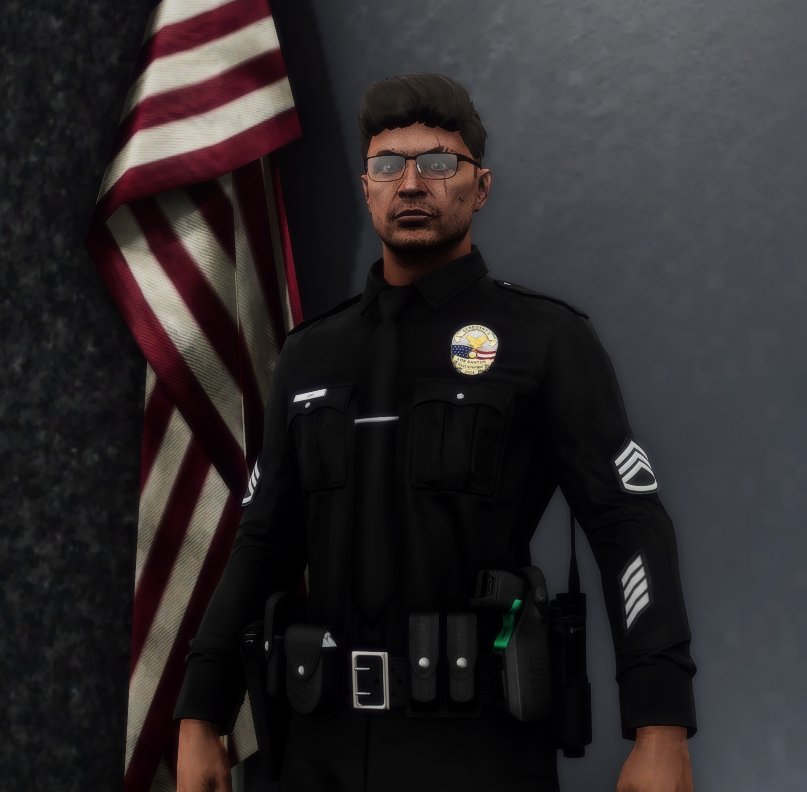

Cody Rose
Na nowego Szefa Policji

↓
Na nowego Szefa Policji
Assistant Chief Of Police

Chief Of Police
Deputy Chief Of Police

Captain I
Captain I
Każda dywizja Los Santos Police Department musi być zarządzana przez osoby kompetentne i doświadczone.
Zatem Patrol Division obejmie Captain Matthew Rose-Harrington, Officer z ogromnym doświadczeniem terenowym i doskonałym wyczuciem pracy patrolowej. Jego stały i bardzo dobry kontakt z Biurem Szefa przełoży się na lepszą koordynację patroli, szybsze reagowanie na problemy oraz realną poprawę jakości codziennej służby.
Detective Bureau będzie pod dowództwem Holly Anderson, doświadczonej i profesjonalnej Pani Officer, która doskonale zna pracę operacyjną i śledczą. Jej ścisła współpraca z Biurem Szefa pozwoli na sprawniejsze prowadzenie dochodzeń, lepszy przepływ informacji i skuteczniejsze zwalczanie przestępczości zorganizowanej. Nawet obecnie Holly Anderson posiada również bardzo dobre kontakty z Departamentem Sprawiedliwości.
Field Training Division nadal będzie zarządzane przez Jacka Shovela, który od długiego czasu z powodzeniem kieruje tą dywizją i jednocześnie jest kandydatem do mojego Biura Szefa. Jego doświadczenie w szkoleniu nowych funkcjonariuszy oraz znajomość procedur gwarantują, że FTD nadal będzie funkcjonować stabilnie i owocnie, przygotowując kolejne pokolenia profesjonalnych oficerów LSPD.
Chcę, aby Biuro Szefa LSPD było sprawnym i profesjonalnym centrum zarządzania Departamentem. Tworzą je osoby uzdolnione technicznie, proceduralnie i w kontaktach publicznych, dzięki czemu potrafimy płynnie realizować zadania i wprowadzać pomysły w życie. Biuro będzie odpowiadać za innowacje (nowe radiowozy, oznakowania, systemy czy inne zmiany) oraz za kontakt z mieszkańcami, mediami i służbami, by każdy czuł, że Departament Policji reaguje na potrzeby ludzi. Dzięki doświadczeniu proceduralnemu nadzorujemy poprawność działań, szkolenia Offierów i egzekwowanie przepisów. Takie Biuro zwiększy efektywność, szybkość reakcji i morale całego Departamentu.

Nie wystarczy tylko karać – trzeba rozmawiać. Chcemy wprowadzić programy spotkań z mieszkańcami Los Santos, żeby znać ich potrzeby i problemy. Każdy mieszkaniec powinien czuć, że LSPD jest częścią społeczności, a nie tylko odległą siłą porządkową. To samo dotyczy Officerów, nie będzie miało miejsca karanie bez uzasadnienia. Ewentualna kara zostanie poprzedzona rozmową, a może nawet takowa wycofa karę, pamiętajmy, iż nie każde zatrzymanie musi kończyć się mandatem.

Nie chcemy, żeby mieszkańcy Los Santos czuli się zagubieni lub ignorowani. Nasze patrole będą bardziej widoczne, w strategicznych punktach miasta i w miejscach o największej przestępczości. Chcę, żeby każdy wiedział, że każdy mieszkaniec może liczyć na naszą pomoc i przedewszystkim na bezpieczeństwo

Każdy Officer po zatrudnieniu będzie miał możliwość dobrowolnie podejść do darmowych szkoleń w zakresie działań służbowych. Chcemy, żeby każdy pracownik mógł rozwijać się w dowolnej wybranej przez siebie drodze kariery. Pamiętajmy, że zawsze musimy być gotowi do działania!

Wszystkie jednostki i podwydziały nie mają o co się obawiać - nie planujemy zatrzymywać czegoś co działa w dobrym celu. Wszystkie jednostki będą miały jasny i łatwy kontakt z Biurem Szefa w razie wsparcia lub pomocy. Chcę, aby każdy obywatel wiedział, że w sytuacjach kryzysowych może liczyć na wsparcie specjalistów.

Korupcja to wróg numer jeden. Biuro Szefa zadba o wewnętrzne audyty i raporty z niezależnych źródeł. Transparentność będzie naszą siłą.